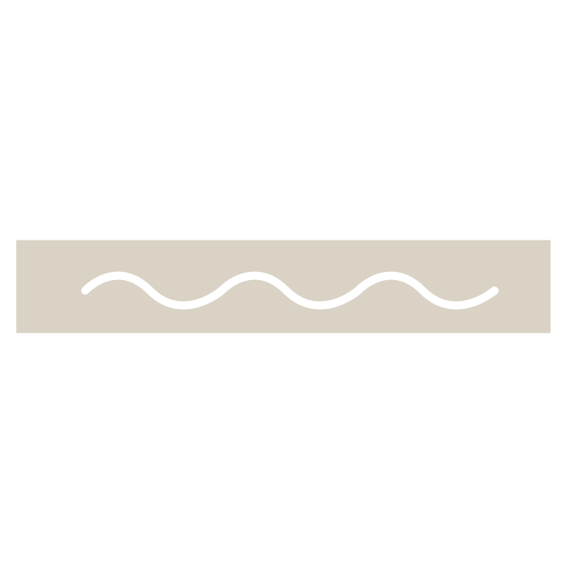

day
debt
ecological
depletion
of our resources
we live on resourses borrowed from future generations. Humans have gone into ecological debt earlier and earlier in the year since.
If population and consumption trends continue, by
we will need the equivalent of two Earths to support us.
1970
2030
w
a
t
e
r
Water pollution is caused by a change in it’s composition due to human activity.
Increased irrigation + agriculture
/ infrastructure prevents water seepage in the soil
/ rising temperatures
Causes:
Drinking water shortage
/ Food Shortage
/ Famine
Consequences:
